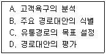
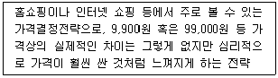
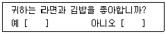
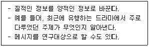
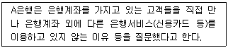
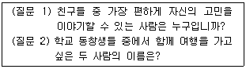
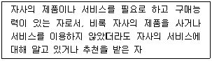

텔레마케팅관리사 (2013-08-18 기출문제)
1과목: 판매관리
1. 데이터베이스 마케팅의 목적이 아닌 것은?
- 고객가치의 극대화를 통한 기업가치의 극대화이다.
- 많은 고객을 확보하고, 기존고객의 이탈을 방지하고, 고객을 강화한다.
- 고객에 대해 판매를 최대화하고 비용을 최소화하여 수익을 극대화한다.
- 즉각적인 고객의 반응을 이끌어낸다.
(정답률: 55%)

2. 상품판매에 있어서 고객이 동시에 구매할 가능성이 높은 상품들을 찾아내어 함께 판매한다는 것을 뜻하는 말은?
- 교차판매
- 순차적 판매
- 인적 판매
- 상승 판매
(정답률: 73%)
3. 인바운드 상담절차로 바르게 연결된 것은?
- 상담준비→전화응답과 자신의 소개→문제 해결→동의와 확인→고객 니즈 간파→종결
- 상담준비→전화응답과 자신의 소개→고객 니즈 간파→동의와 확인→문제 해결→종결
- 상담준비→전화응답과 자신의 소개→고객 니즈 간파→문제 해결→동의와 확인→종결
- 상담준비→고객 니즈 간파→문제 해결→동의와 확인→전화응답과 자신의 소개→종결
(정답률: 71%)
4. 일정수준 이상의 입지조건, 이미지, 경영능력을 가진 중간상을 선별하여 서비스를 취급할 수 있는 권한을 부여하는 경로전략을 무엇이라고 하는가?
- 독점적 유통
- 집중적 유통
- 선택적 유통
- 집약적 유통
(정답률: 78%)
5. 아웃바운드 텔레마케팅 특성에 대한 설명으로 틀린 것은?
- 고객에게 전화를 하는 성과 지향적이다.
- 대상고객의 리스트나 자료가 있다.
- 스크립트 활용보다 Q&A에 의존한다.
- 고객과의 신뢰구축에 따라 판매율이 달라진다.
(정답률: 85%)
6. 일반적으로 기업이 통제 가능한 마케팅 환경요인은?
- 광고 환경
- 법률적 환경
- 정치적 환경
- 문화적 환경
(정답률: 79%)
7. 대형편의점에서 고객들을 유치하기 위해 매우 널리 알려진 브랜드 제품을 특별 할인가격으로 판매하는 광고를 하였다면, 이는 어떤 가격전략을 택한 것인가?
- 선도가격전략
- 특별가격전략
- 품위가격전략
- 서수가격전략
(정답률: 25%)
8. 신제품에 기존 브랜드를 연결시켜 소비자가 쉽게 접근할 수 있도록 하는 브랜드 관리 전략은?
- 이중브랜드전략
- 라인확장전략
- 브랜드확장전략
- 신규브랜드전략
(정답률: 60%)
9. 제품이용도를 제고하고자 이탈고객을 대상으로 거래단절의 원인을 조사하여 이에 대한 대책을 수립하는 마케팅 전략은?
- 릴레이션십 마케팅(relationship marketing)
- 리텐션 마케팅(retention marketing)
- 내부마케팅(internal marketing)
- 데이터베이스 마케팅(database marketing)
(정답률: 52%)
10. 다음 중 재포지셔닝이 필요한 상황과 가장 거리가 먼 것은?
- 기업 매출 증가
- 소비자 기호의 변화
- 경쟁우위 열세
- 제품속성 선택 실패
(정답률: 83%)
11. 제품수명주기 중 시장 확대 전략, 제품 수정 전략, 상표 재포지셔닝 전략을 사용해야 하는 주기는?
- 도입기
- 성장기
- 성숙기
- 쇠퇴기
(정답률: 73%)
12. 상대적으로 저가전략이 적합한 경우로 틀린 것은?
- 높은 품질로 새로운 소비자층을 유인하고자 할 때
- 시장에서 경쟁사의 수가 많을 것으로 예상될 때
- 소비자들의 본원적인 수요를 자극하고자 할 때
- 시장수요의 가격탄력성이 높은 때
(정답률: 81%)
13. 아웃바운드 판매전략의 일련과정이 바르게 나열된 것은?
- 잠재고객 특성 정의→잠재고객 파악→스크리닝→판매→사후관리
- 잠재고객 특성 정의→스크리닝→잠재고객 파악→판매→사후관리
- 잠재고객 파악→잠재고객 특성 정의→스크리닝→판매→사후관리
- 잠재고객 파악→스크리닝→잠재고객 특성 정의→판매→사후관리
(정답률: 50%)
14. 소비자 구매의사 결정에 관한 단계별 설명으로 틀린 것은?
- 정보탐색 - 소비자들이 이용하는 정보탐색 활동에는 인적, 상적, 공공, 경험 등이 있다.
- 문제인식 - 소비자 구매의사 결정 과정의 첫 단계이다.
- 대체안 평가 - 가장 선호하는 상표를 구매한다.
- 구매 후 행동 - 제품 사용성과에 만족한 소비자는 재구매의 가능성이 높다.
(정답률: 72%)
15. 아웃바운드 텔레마케팅의 성공 요인과 가장 거리가 먼 것은?
- 브랜드 품질의 확보와 신뢰성
- 고객 니즈에 맞는 전용상품과 특화된 서비스 발굴
- 정확한 대상고객의 선정
- 탄력적인 인력배치
(정답률: 68%)
16. 유통경로에 관한 설명 중 틀린 것은?
- 유통경로는 생산자로부터 소비자에게 제품이 전달되는 과정이다.
- 유통경로의 구성원들은 재화를 수송하고 저장하며, 정보를 수집한다.
- 유통경로의 길이는 중간상 수준의 수를 말한다.
- 유통경로의 서비스나 아이디어는 생산자들에게는 큰 의미가 없다.
(정답률: 83%)
17. 생산자가 개방적인 유통전략을 구사해야 하는 소비재는?
- 편의품
- 선매품
- 전문품
- 비탐색품
(정답률: 66%)
18. 다음 중 제품수명주기의 단계별 특징과 마케팅 전략에 관한 설명과 가장 거리가 먼 것은?
- 도입기 - 판매가 완만하게 상승하나 수요가 적고 제품의 원가도 높다.
- 성장기 - 경쟁제품이 나타나고 모방제품, 개량제품이 나타난다.
- 성숙기 - 이미지광고를 통한 제품의 차별화를 시도한다.
- 쇠퇴기 - 제품을 다시 한번 활성화시키는 재활성화(revitalization)를 시도할 필요가 있다.
(정답률: 42%)
19. 다음 중 세분시장의 평가에 대한 설명으로 틀린 것은?
- 세분시장이 기업의 목표와 일치한다면 그 세분시장에서 성공하는데 필요한 기술과 자원을 보유한 것으로 본다.
- 세분시장을 평가하기 위하여 가장 먼저 각각의 세분시장의 매출액, 성장률 그리고 기대수익률을 조사하여야 한다.
- 세분시장 내에 강력하고 공격적인 경쟁자가 다수 포진하고 있다면 그 세분시장의 매력성은 크게 떨어진다.
- 세분시장 내에 다양한 대체 상품이 존재하는 경우에는 당해 상품의 가격이나 이익에도 많은 영향을 미친다.
(정답률: 55%)
20. 유통경로의 설계과정을 바르게 나열한 것은?

- A→C→B→D
- B→A→D→C
- C→B→A→D
- D→C→A→B
(정답률: 78%)
21. 여러 점포를 모두 특정지역에 집중하여 입지시키는 방법으로 대개 대형 상관이나 교통중심지를 대상으로 하는 마케팅 방법은?
- 경쟁적군집화
- 포화마케팅
- 프랜차이징
- 다경로 유통시스템
(정답률: 53%)
22. 소비재(consumer product)에 해당하지 않는 것은?
- 편의품
- 선매품
- 전문품
- 소모품
(정답률: 60%)
23. 다음 설명에 해당하는 가격결정 전략은?

- 유도가격결정
- 위신가격결정
- 단수가격결정
- 가격단계화
(정답률: 49%)
24. 어느 특정기업이 소비자의 마음속에 자사상품을 원하는 위치로 부각시키려는 노력을 무엇이라 하는가?
- 이미테이션
- 포지셔닝
- 시장의 표적화
- 독점시장화
(정답률: 76%)
25. 코틀러 교수의 3단계 제품수준에 해당하지 않는 것은?
- 핵심제품
- 명품제품
- 유형제품
- 포괄제품
(정답률: 73%)
2과목: 시장조사
26. 응답자에게 조사자가 전화를 걸어 질문하는 전화조사법의 단점으로 옳지 않은 것은?
- 시각적인 보조 자료(그림, 도표)를 활용할 수 없다.
- 질문의 길이와 내용에 제한을 받는다.
- 질문 중에 응답자가 전화통화를 중단하는 경우도 있다.
- 전화보급의 보편화로 응답자에게 접근이 용이하다.
(정답률: 57%)
27. 타당성이란 측정하고자 하는 개념이나 속성을 정확히 측정하였는가를 말한다. 타당성을 향상시키기 위한 방법이 아닌 것은?
- 엄격한 개념정의를 하고 대상을 정확히 측정하게 하여 타당성을 향상시킨다.
- 항목들의 의미가 조사자와 응답자간에 정확한 의사소통이 되도록 신중을 기한다.
- 한 개의 척도만 사용하여 측정대상의 집중타당성을 평가한다.
- 척도개발 시 측정대상에 대해 명확히 이해하는 사람에게 맡겨 내용타당성을 높인다.
(정답률: 80%)
28. 수집된 자료 중 2차 자료의 장점이 아닌 것은?
- 저렴한 비용
- 수집과정의 용이성
- 시간의 절약
- 입수자료의 적합성
(정답률: 61%)
29. 자료를 수집하고 자료를 처리하는 과정에서 코딩이나 입력을 하지 않아도 되므로 시간을 절약할 수 있는 조사는?
- 인터넷 조사
- 우편조사
- 전화조사
- 방문조사
(정답률: 69%)
30. 다음 질문문항이 부적합한 이유는?

- 유도신문이기 때문이다.
- 한 번에 두 개의 질문을 하기 때문이다.
- 적합성이 떨어지기 때문이다.
- 응답자의 의견을 묻고 있기 때문이다.
(정답률: 79%)
31. 다음과 같은 특징을 지닌 연구방법은?

- 투사법
- 내용분석법
- 질적연구법
- 사회성측정법
(정답률: 50%)
32. 설문지를 작성한 후에, 예정 응답자 중에서 일부를 선정하여 예정된 본 조사와 동일한 절차와 방법으로 질문서를 시험하여 질문의 타당성을 높이는 조사절차를 무엇이라고 하는가?
- 예비 조사
- 사전 조사
- 본 조사
- 마무리 조사
(정답률: 58%)
33. 설문지 유형 중에서 동기조사에 해당하는 투사법이 아닌 것은?
- 통각시험법
- 단어연상법
- 문장완성법
- 개인면접법
(정답률: 53%)
34. 다음 사례에서 A은행이 수집하고 있는 자료는?

- 설문지 자료
- 2차 자료
- 관찰 자료
- 비확률적 자료
(정답률: 53%)
35. 다음 중 모집단에 관한 설명으로 틀린 것은?
- 모집단을 설정할 때는 전화 걸 대상, 응답자 역할의 구체화, 직업 등을 고려해야 한다.
- 모집단은 조사자가 추론하고자 하는 모든 자료들의 집합을 말한다.
- 모집단은 자료의 흩어진 정도를 나타내지 않는다.
- 전화조사 시 조사원이 어떤 사람들에게 전화할 것인가를 추출하는 기초자료이다.
(정답률: 53%)
36. 통계분석법에 관한 설명으로 틀린 것은?
- 아이스크림 제조 기업이 날씨에 따라 아이스크림 구매량이 어떻게 변화하는가를 분석하는 것은 상관분석이다.
- 기업의 광고담당자가 광고액에 따른 매출액 변화와 어떤 광고매체가 매출액에 더 많은 영향을 미치는가를 파악하는 것이 상관분석이다.
- 분산분석은 전자회사가 새로운 모델을 만들었을 때 소비자들이 어떤 마케팅 전략에 더 좋은 반응을 나타내는가를 알고자 할 때 사용되는 분석이다.
- 분산분석은 전략의 효과측정이나 소비자 집단 간의 반응 차이 등을 알아보는 데 유용한 기법이다.
(정답률: 45%)
37. 다음 중 확률표본추출 방법에 해당하지 않는 것은?
- 계통표집
- 층화표집
- 편의표집
- 집락표집
(정답률: 59%)
38. 다음과 같은 질문을 통해 자료를 수집하는 방식은?

- 소시오메트리
- 메트리스법
- Q-소트
- 스캘로그램
(정답률: 58%)
39. 한 시점에서 다양한 대상과 변수에 대해 측정하는 조사 설계로 적은 비용과 시간을 들여서 많은 대상에 대해 많은 변수를 측정할 수 있는 조사는?
- 인과조사
- 횡단조사
- 종단조사
- 사후측정설계
(정답률: 45%)
40. 조사대상자의 교육수준에 따라 신뢰도의 격차가 크게 발생될 수 있는 척도는?
- 거트만척도(guttman scale)
- 의미분화척도(semantic differential scale)
- 리커트척도(likert scale)
- 서스톤척도(thurstone scale)
(정답률: 35%)
41. 설문지를 구성할 때 제일 먼저 위치해야 하는 요소는?
- 면접자의 신상기록 항목
- 응답자 분류를 위한 문항
- 응답자에 대한 협조 요청문
- 필요한 정보 획득을 위한 문항
(정답률: 79%)
42. 관찰법을 이용하여 얻을 수 있는 자료의 내용으로 가장 거리가 먼 것은?
- 실제행동
- 응답자의 기억
- 현장 구매행동
- 대화 내용
(정답률: 85%)
43. 마케팅 조사의 한 종류로써 인과조사는 원인과 결과를 규명하기 위한 조사이다. 인과관계를 정확하게 밝히기 위한 인과관계의 성립요건이 아닌 것은?
- 실험변수의 변화
- 변화의 시간적 우선순위
- 병발생의 조건
- 외생변수 영향의 통제
(정답률: 25%)
44. 다음 중 탐색적 조사방법에 해당하지 않는 것은?
- 전문가 의견조사
- 문헌조사
- 실험연구
- 사례연구
(정답률: 62%)
45. 통계조사에 포함되는 전수조사와 표본조사에 관한 설명으로 틀린 것은?
- 전수조사는 정밀도를 요할 때 사용되며, 모든 부분을 전부 조사하는 것을 말한다.
- 표본조사는 부분조사라고도 한다.
- 표본조사는 전수조사에 비해 인력과 시간 및 비용이 적게 든다.
- 다면적으로 조사결과를 이용하려 할 때에는 표본조사를 한다.
(정답률: 62%)
46. 다음 중 변인에 대한 설명으로 틀린 것은?
- 독립변인 : 인과관계를 분석할 목적으로 수행되는 연구에서 원인이 되는 변인
- 중재변인 : 독립변인과 종속변인의 관계에서 직접적인 인과관계가 아닌 제3변인의 효과를 포함하는 경우의 제3변인
- 잠재변인 : 독립변인 이외에 종속변인에 영향을 주는 모든 변인
- 관찰변인 : 조작적 정의에 따라 관찰가능하고 측정 가능한 실체가 있는 변인
(정답률: 61%)
47. 동일한 실험대상자들에게 일정한 시간적 간격을 두고 반복적으로 조사하는 방법은?
- 연속 조사
- 횡단 조사
- 코호트 조사
- 패널 조사
(정답률: 42%)
48. 마케팅 믹스의 4P 중 제품(product) 결정과 관련된 시장조사의 역할과 목적으로 틀린 것은?
- 타겟 소비자가 제품으로부터 기대하는 편익이 무엇인지 알 수 있다.
- 제품 판매에 적합한 유통경로를 파악할 수 있다.
- 기존 제품에 새로 추가할 속성이나 변경해야 할 속성을 파악할 수 있다.
- 브랜드명의 결정, 패키지, 로고 대안들에 대한 테스트를 할 수 있다.
(정답률: 56%)
49. 신뢰도의 구체적 평가방법에 해당하지 않는 것은?
- 복수양식법
- 재조사법
- 내적 일관성법
- 구성체 신뢰도법
(정답률: 36%)
50. 전화번호부에 의한 표본추출방법에 관한 설명으로 틀린 것은?
- 전화번호부에 표시된 지역구분보다 행적적인 경계로 표본단위를 정하는 것이 좋다.
- 가나다 순으로 된 전화번호부에서 표본을 추출할 때 체계적으로 하되 중복되지 않게 한다.
- 맨 앞이나 맨 끝은 가능한 피하는 것이 좋다.
- 최초의 목적이나 하나의 규정이 있으면 그대로 계속하는 것이 좋다.
(정답률: 62%)
3과목: 텔레마케팅관리
51. 텔레마케터의 성과관리 방법으로 가장 적합하지 않은 것은?
- 다양한 방법의 포상이 텔레마케터에게는 더 효과적이다.
- 모니터링은 교육 및 동기부여를 위한 긍정적인 피드백으로 활용되어야 한다.
- 개인의 성과는 팀의 성과에 연계되어 평가 되어야 한다.
- 판매 권유 콜센터의 경우 성과에 대한 보상 차등폭을 최소화해야 한다.
(정답률: 60%)
52. 상담원에 대한 OJT 종료 후 평가에 관한 설명으로 틀린 것은?
- OJT 종료 후에 개인별 및 전체적인 측면을 평가하여 업무나 경영에 적극적으로 반영해야 한다.
- 계획, 실시, 결과의 단계별로 평가하면 효율적이다.
- OJT 실시 중 기업의 전략, 업무, 영업방법 등이 변경되었을 때에는 평가기준에 대한 수정 여부를 검토해야 한다.
- OJT 평가결과에 대한 수용도가 낮으므로 평가결과에 대한 피드백은 개인에게 하지 않아야 한다.
(정답률: 76%)
53. 다양한 전문적 기술을 가진 사람들의 집단에 의해 해결될 수 있는 프로젝트를 중심으로 조직화된 신속한 변화와 적응이 가능한 임시적 시스템인 조직구조는?
- 매트릭스 조직구조
- 혼합형 조직구조
- 위원회 조직구조
- 직능별 조직구조
(정답률: 34%)
54. 텔레마케터 코칭 시 관리자가 지켜야 할 올바른 태도가 아닌 것은?
- 코칭 시작 시 텔레마케터와 친밀감형성을 먼저 한다.
- 장점에 대한 칭찬을 곁들이면서 문제점에 대한 지적을 하고 동의를 구한다.
- 문제 코칭사항에 대해 상담원의 답변을 들을 필요는 없다.
- 문제점의 지적과 함께 개선 방안에 대해 제시하거나 토의 한다.
(정답률: 82%)
55. 유기적인 콜센터 조직설계로 가장 거리가 먼 것은?
- 과업공유의 조직설계
- 팀제의 조직설계
- 권한 집중화의 조직설계
- 신속한 업무처리의 조직설계
(정답률: 71%)
56. 텔레마케터 모니터링의 평가항목에 포함되지 않는 것은?
- 텔레마케터의 음성
- 텔레마케터의 표현 및 구술능력
- 텔레마케터의 전문성
- 텔레마케터의 주관적인 사고
(정답률: 78%)
57. 콜센터 상담사나 각 팀별 성과향상을 위한 활동으로 적합하지 않는 것은?
- 개인, 팀별로 적절한 동기부여를 시킬 수 있는 프로그램을 운영한다.
- 성과 측정시 공정성과 객관성을 유지하도록 최대한 노력한다.
- 합리적인 급여체계를 구축하여 근무집중도를 향상시키고 이직률을 낮추어야 한다.
- 시외 지역의 교통이 혼잡하지 않은 곳에 사무실을 위치시키고 쾌적한 근무환경을 제공한다.
(정답률: 65%)
58. 상담원의 보상계획 수립 시 고려해야 할 사항으로 가장 거리가 먼 것은?
- 급여계획과 인센티브 정책 마련 시 직원을 참여시킨다.
- 인력 수요를 고려한다.
- 정확하고 객관적으로 측정된 성과분석 자료를 활용한다.
- 벤치마킹 및 산업평균을 최우선 반영한다.
(정답률: 71%)
59. 텔레마케터 교육#훈련을 위한 역할연가(role playing)에 관한 설명으로 가장 적합하지 않은 것은?
- 조직의 응집력과 단결력을 강화할 수 있다.
- 텔레마케터의 자신감과 상황대응 능력을 향상시킬 수 있다.
- 실제 상황대로 스크립트를 가지고 연습함으로써 다양한 실전 경험을 할 수 있다.
- 텔레마케터는 응대업무와 관련한 개인적인 문제점을 구체적으로 피드백 받을 수 있다.
(정답률: 59%)
60. 인바운드 콜센터의 인입콜 데이터 산정기준에 대한 설명으로 적합하지 않은 것은?
- 퍼펙트 콜 수를 기준으로 산정한다.
- 인입되는 모든 콜은 동일한 기준과 방법으로만 산정하며 시간별, 요인별 특성은 감안하지 않는다.
- 상담원의 결근, 휴식, 식사, 개인적 부재 등의 부재성을 배제한 상태에서 산정된 데이터를 기준으로 한다.
- 먼저 걸려온 전화가 먼저 처리되는 순서를 준수하여 보다 정밀하고 객관적으로 산정되도록 한다.
(정답률: 77%)
61. 고객 불편사항, 주문 접수 등을 수행하는 콜센터 형태로 가장 적합한 것은?
- 인바운드 콜센터
- 아웃바운드 콜센터
- 인소싱 콜센터
- 혼합형 콜센터
(정답률: 77%)
62. 직무분석의 방법 중 관찰법에 대한 설명으로 옳은 것은?
- 대상직무의 작업자가 많은 시간을 할애해야 한다.
- 다른 작업자를 감독하거나 조정하는 등의 직무내용에 적합하다.
- 분석자의 주관이 개입될 위험이 적다.
- 분석자는 대상업무에 대한 전문적 지식이 필요 없다.
(정답률: 43%)
63. 콜센터 문화에 영향을 미치는 사회적 요인에 해당되지 않는 것은?
- 행정당국의 제도적 지원
- 상담원의 근로선택의 자유로움
- 상담원에 대한 직업의 매력도
- 상담원의 콜센터 근무만족도
(정답률: 38%)
64. 다음 중 콜센터 조직의 특성이 아닌 것은?
- 고객지향적 조직이다.
- 고객과 간접적으로 접촉하는 조직이다.
- 정보와 커뮤니케이션을 매개로 하는 조직이다.
- 상황의 다양성, 집중성, 즉시성을 요구하는 대응조직이다.
(정답률: 70%)
65. 회선 및 상담사의 부족으로 통화 연결되지 못한 콜의 비율을 무엇이라 하는가?
- 분단비용
- 시도콜
- 전환율
- 불통률
(정답률: 83%)
66. A회사 콜센터는 직접 고객을 상담하는 상담팀, 교육을 담당하는 교육팀, 모니터링을 담당하는 QA팀, 각종 통계 관리를 담당하는 운영지원팀, 그리고 시스템 관리를 담당하는 시스템 관리팀으로 구분되어 있다. 이와 같이 담당하는 업무의 성격에 따라 팀이 구분되는 조직을 무엇이라고 하는가?
- 기능별 조직
- 피라미드 조직
- 라인별 조직
- 매트릭스 조직
(정답률: 70%)
67. House가 제시한 목표-경로 모형의 리더십 유형에 관한 설명으로 틀린 것은?
- 지시적 리더십 - 조직화, 통제, 감독과 관련되는 행위, 규정, 작업일정을 수립하고 직무명확화를 기한다.
- 후원적 리더십 - 부하의 복지와 욕구에 관심을 가지며 배려적이다.
- 참여적 리더십 - 부하에게 기준을 제시하며 일방적 커뮤니케이션에 의존한다.
- 성취지향적 리더십 - 도전적 목표를 가지고 잠재력을 개발하며 높은 성과를 지향하도록 유도한다.
(정답률: 74%)
68. 조직의 성과관리를 위한 개인평가방법을 상사평가방식과 다면평가방식으로 구분할 때 상사평가방식의 특징이 아닌 것은?
- 상사의 책임감 강화
- 간편한 작업 난이도
- 평가결과의 공정성 확보
- 중심화, 관대화 오류 발생 가능성
(정답률: 36%)
69. 텔레마케팅의 전개과정을 바르게 나열한 것은?
- 기획→실행→반응→측정→평가
- 기획→실행→측정→반응→평가
- 기획→측정→실행→평가→반응
- 기획→측정→실행→반응→평가
(정답률: 46%)
70. 콜센터의 활성화 방법으로 옳지 않은 것은?
- 쾌적한 환경을 조성해 준다.
- 목표를 정하고 결과를 점검한다.
- 수시로 모니터링을 실시하고 감청, 감시한다.
- 일일보고서를 분석하고 피드백(feedback)을 한다.
(정답률: 72%)
71. 고효율, 고성과를 창출하기 위한 콜센터 직무별 역할에 관한 설명으로 틀린 것은?
- 상담사는 높은 상담품질로 더 높은 성과달성에 기여한다.
- 수퍼바이저는 코칭을 통해 상담사의 업무역량을 개발하여 더 높은 성과달성에 기여한다.
- QAA는 상담품질관리를 통해 더 높은 성과달성에 기여한다.
- 기술지원자(IT)는 적절한 스케줄 관리를 통해 오버타임 원가를 줄임으로써 상담 시 발생되는 비용을 감소시킨다.
(정답률: 78%)
72. 콜 예측을 위한 콜센터 성과지표의 설명으로 틀린 것은?
- 평균통화시간(초) - 상담원이 고객 한 사람과 통화하기 위해 준비 단계부터 상담종료까지 소요되는 평균적인 시간을 말한다.
- 평균 마무리 처리시간(초) - 평균통화시간 이후 상담내용을 별도로 마무리하는 데 소요되는 평균적인 시간을 말한다.
- 평균 통화처리시간(초) - 평균통화시간과 평균 마무리처리시간을 합한 것이다.
- 평균응대속도(초) - 고객이 상담원과 대화 이전에 대기하고 있는 총시간을 응답한 총통화 수로 나눈 값을 말한다.
(정답률: 20%)
73. 콜센터 개설 시 외부 전문기관에 위탁하여 조직을 운영할 경우의 장점이 아닌 것은?
- 초기 투자비용이 적게 든다.
- 고객정보 보안이 용이하다.
- 최신의 효과적인 기술을 제공받을 수 있다.
- 전문업체인 경우 외국어 등 다양한 유형의 콜을 처리할 수 있다.
(정답률: 60%)
74. 다음 중 OJT의 장점과 가장 거리가 먼 것은?
- 교육 대상자의 능력과 수준에 맞추어 지도가 가능하다.
- 교육 대상자는 교육 받은 내용을 바로 실행해 보고 수정할 수 있다.
- 개인 지도를 통해 교육 효과가 높다.
- 실제 일이 이루어지는 과정을 현장에서 보여주면 되므로 교육자는 사전 교육 계획을 세울 필요가 없다.
(정답률: 84%)
75. 콜센터 조직의 구성 원칙과 거리가 먼 것은?
- 감독한계의 원칙 : 콜센터 리더 한 사람이 직접 리더십을 발휘할 수 있는 상담원의 수에는 한계가 있다.
- 전문화의 원칙 : 콜센터 조직의 구성원은 가능한 한 하나의 특수한 전문화된 업무만을 담당할 때 효율성과 생산성이 더욱 향상될 수 있다.
- 책임과 권한의 원칙 : 콜센터 내 조직원들에게 보다 명확한 업무분장과 수행에 따른 적정한 권한의 부여가 이루어져야 한다.
- 통일성의 원칙 : 상담원은 라인에 따라 한 사람의 상사로부터 명령이나 지시를 받아야 업무지침의 혼란과 조직관리의 혼선을 방지할 수 있다.
(정답률: 37%)
4과목: 고객응대
76. 커뮤니케이션에 대한 설명으로 가장 적합한 것은?
- 커뮤니케이션을 통해 고객 불만이 증가된다.
- 의사결정을 하는데 있어 혼란을 초래한다.
- 고객으로부터 정확한 정보를 얻기 위한 수단이다.
- 원만하고 친밀한 인간관계의 형성은 커뮤니케이션의 역기능이다.
(정답률: 74%)
77. 고객생애가치에 관한 설명으로 옳은 것은?
- 처음으로 자사 제품 또는 서비스를 구입한 때부터 고객이 사망하는 시점까지의 기간이다.
- 특정 회사의 제품 또는 서비스를 처음 구매하거나 요청한 기간이다.
- 특정 회사의 제품 또는 서비스를 구매한 날로부터 최종 반품처리한 날까지의 기간이다.
- 한 고객이 한 기업의 고객으로 존재하는 전체기간 동안 기업에게 제공할 것으로 추정되는 재무적인 공헌도의 합계라고 할 수 있다.
(정답률: 60%)
78. 고객에게 전달할 내용을 선정할 때 유의할 사항으로 틀린 것은?
- 상황에 알맞은 내용을 선정한다.
- 상담사가 충분히 알고 있는 내용을 선정한다.
- 상담사의 수준에 맞는 내용을 선정한다.
- 고객 정보를 바탕으로 하여 내용을 선정한다.
(정답률: 75%)
79. 발신자에 의한 커뮤니케이션 장애요인이 아닌 것은?
- 반응과 피드백 부족
- 커뮤니케이션 스킬 부족
- 발신자의 신뢰 부족
- 타인에 의한 민감성 부족
(정답률: 19%)
80. 전화상담시 호감을 주는 표현의 예로 거리가 먼 것은?
- 긍정일 때 - 잘 알겠습니다.
- 맞장구 칠 때 - 저도 그렇게 생각하고 있습니다.
- 거부할 때 - 회사 방침에 따라야 합니다.
- 분명하지 않을 때 - 어떻게 하는 것이 좋겠습니까?
(정답률: 67%)
81. 고객상담의 필요성이 증가하는 요인으로 거리가 먼 것은?
- 고객욕구의 복잡화와 다양화
- 소비자불만과 소비자피해의 양적 증가
- 소비자권리에 대한 소비자의식 향상
- 제품 공급부족 현상의 심화
(정답률: 65%)
82. 고객의 일반적인 욕구에 대한 설명으로 적합하지 않은 것은?
- 개인적으로 알아주고 관심과 정성이 담긴 서비스를 제공받기를 원한다.
- 소비자가 원할 때 적시에 서비스를 제공받기를 원한다.
- 책임당사자인 제3자에게 업무를 넘겨서 처리해 주기를 원한다.
- 자신의 문제에 대해 공감을 얻고 공정하게 처리되기를 원한다.
(정답률: 68%)
83. 고객의 이야기를 효율적으로 듣는 것을 방해하는 개인적인 장애요인이 아닌 것은?
- 편견
- 청각장애
- 사고의 속도
- 정보과잉
(정답률: 65%)
84. 상담사의 효과적인 의사소통이 아닌 것은?
- 적극적인 경청자세를 취하며 열심히 듣는다.
- 감정적인 말들을 판단하고 그것에 얽매이지 않는다.
- 말에 나타난 것 이외의 내용을 이해한다.
- 어려운 주제는 피하고 가벼운 주제를 찾아서 다룬다.
(정답률: 56%)
85. 고객니즈 탐색을 위한 폐쇄형 질문유형으로 적합하지 않는 경우는?
- 고객의 민감한 부분의 확인이 필요할 때
- 보다 구체적인 정보를 필요로 할 때
- 고객의 이해정도를 확인하고자 할 때
- 고객으로부터 자유로운 의사타진이나 대답을 원할 때
(정답률: 55%)
86. 지속적인 상품구매를 유도하기 위한 고객 응대 시 상담원의 올바른 자세가 아닌 것은?
- 설득력 있는 대화와 유용한 정보 제공을 통해 고객의 구매 의사 결정에 도움을 주어야 한다.
- 자신 있는 태도와 말씨, 전문적인 상담을 통해 고객의 신뢰를 획득해야 한다.
- 수익을 많이 올릴 수 있도록 고객들에게 물건을 높은 가격에 판매하도록 노력해야 한다.
- 상품의 판매뿐만 아니라 고객의 관리를 위해 고객 정보를 수집하고 고객과의 지속적인 관계 유지를 위한 노력을 기울여야 한다.
(정답률: 80%)
87. 고객 응대 시 제공하는 서비스의 특징에 해당되지 않는 것은?
- 서비스는 형태가 없는 무형의 상품으로 객관적으로 볼 수 없는 형태로 되어 있어 측정하기 매우 어렵다.
- 동질의 서비스를 제공하면 고객 개인별로 서비스를 평가하는 기분은 동일하다.
- 서비스는 생산과 동시에 소멸되는 성격을 가지고 있다.
- 서비스를 제공하는 장소, 인적 자원에 따라 서비스의 품질이 달라진다.
(정답률: 71%)
88. 다음 중 고객가치 측정기법이 아닌 것은?
- 고객생애가치
- 고객점유율
- RFM
- 시장점유율
(정답률: 56%)
89. 고객의 구체적 욕구를 파악하기 위한 질문기법이 아닌 것은?
- 고객의 틀린 말은 즉각적으로 바르게 고쳐주거나 평가해준다.
- 가능하면 긍정적인 질문을 한다.
- 구체적으로 질문한다.
- 더 좋은 서비스를 제공하기 위해 소비자가 확실히 원하는 것을 찾아내는 질문을 한다.
(정답률: 87%)
90. 고객관계관리의 변화과정에 대한 설명으로 틀린 것은?
- 고객과의 관계가 개별고객과 쌍방향 의사소통에서 그룹화된 고객과의 일방적 관계로 변화되었다.
- 고객이 수동적#선택적 구매자에서 능동적 구매자로 변화되었다.
- 고객관리가 영업과 판매부서 위주에서 전사적 관리로 변화되었다.
- 고객과의 관계가 일시적인 관계에서 장기적인 관계로 변화되었다.
(정답률: 75%)
91. 고객의 반론을 극복하기 위한 방법이 아닌 것은?
- 거절이나 반론에 대한 두려움을 없앤다.
- 실질적, 미래적 혜택을 베푼다.
- 고객의 니즈를 집중적으로 분석하여 관심을 유도한다.
- 인간적인 신뢰성으로 설득한다.
(정답률: 49%)
92. 고객이 해결해야 할 문제를 제기했을 때 바람직한 처리 절차로 옳은 것은?
- 문제파악→자료수집분석→대안 찾기→대안 평가→결정 내리기
- 자료수집분석→문제파악→대안 찾기→결정 내리기→대안 평가
- 대안 찾기→대안 평가→문제파악→자료수집분석→결정 내리기
- 문제파악→대안 찾기→자료수집분석→대안 평가→결정 내리기
(정답률: 65%)
93. 고객로열티에 의한 효과로 맞지 않는 것은?
- 수익증대
- 비용절감
- 추천
- 상표 프리미엄
(정답률: 45%)
94. 다음 중 고객에게 자신이 의도하는 것을 적극적으로 전달하는 방법으로 적합하지 않은 것은?
- 자신의 의도를 강력하고 직설적으로 표현한다.
- 듣기 좋은 음성과 언어로 대답한다.
- 호감이 가도록 메시지를 표현한다.
- 효과적으로 말하는 요령을 익힌다.
(정답률: 82%)
95. 다음 중 고객유지의 필요성에 대한 설명으로 틀린 것은?
- 기존 고객을 잘 관리하는 것이 신규고객을 유치하는 것보다 효율적이다.
- 기존 고객의 유지를 통해 고객충성도를 증진시키고 고객점유율을 유지할 수 있다.
- 회사와의 지속적인 거래관계를 유도하여 매출액을 향상시킬 수 있다.
- 새로운 고객을 지속적으로 유치하여 단골고객화 할 수 있다.
(정답률: 77%)
96. 다음은 고객의 행동별에 따른 단계 중 어디에 해당하는가?

- 구매용의자
- 구매가능자
- 옹호고객
- 탈락고객
(정답률: 57%)
97. 화가 난 고객과의 상담 시 적합한 응대 요령이 아닌 것은?
- 고객의 문제가 이미 상담원이 잘 알고 있는 문제라 하더라도, 고객이 충분히 말할 수 있도록 고객을 방해하지 않는다.
- 고객이 말하는 사실보다 고객의 감정을 헤아리며 공감적 표현을 전달한다.
- 일상적인 불만으로 해결이 가능하더라도 바로 처리하기보다는 그 고객만을 위한 특별한 배려임을 강조하며 시간을 끈다.
- 문제와 고객의 불만 정도에 따른 적절한 사과를 잊지 않는다.
(정답률: 78%)
98. 고객불만처리에 대한 설명으로 적합하지 않은 것은?
- 경청 : 선입관을 버리고, 끝까지 잘 들어준다.
- 공감 : 고객의 입장에서 기분을 이해하고 공감한다.
- 설득 : 제품 또는 서비스에 잘못이 없음을 정확하게 알린다.
- 사과 : 회사를 대표해서 정중하게 사과한다.
(정답률: 75%)
99. 통화량 폭증으로 인해 고객이 전화연결을 기다려야 하는 경우의 가장 바람직한 전화대기 전략은?
- 대략 얼마나 기다려야 하는지, 현재 통화가 얼마나 밀려 있는지 알려준다.
- 대기하는 동안 회사 제품과 서비스 광고를 틀어준다.
- 클래식이나 대중음악의 한 소절을 따서 들려준다.
- 추억의 헤비메탈 음악을 틀어놓은 사내방송을 들려준다.
(정답률: 73%)
100. 관계 마케팅의 목표에 대한 설명으로 틀린 것은?
- 신규고객 유치 시 고객의 질보다 고객 확보수가 중요하다.
- 고객만족의 궁극적 목적은 반복구매를 유도하는 것이다.
- 기본적으로 신규 거래보다는 기존 거래 기업과의 관계 유지를 선호한다.
- 대고객관계 증진의 목표는 충성고객의 확보이다.
(정답률: 73%)